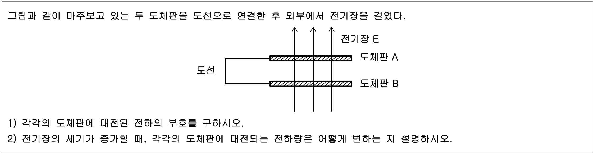

문제 5
그림과 같이 마주보고 있는 두 도체판을 도선으로 연결한 후 외부에서 전기장을 걸었다.

(1) 각각의 도체판에 대전된 전하의 부호를 구하시오.
(2) 전기장의 세기가 증가할 때, 각각의 도체판에 대전되는 전하량은 어떻게 변하는 지 설명하시오.
그림과 같이 마주보고 있는 두 도체판을 도선으로 연결한 후 외부에서 전기장을 걸었다.
(1) 각각의 도체판에 대전된 전하의 부호를 구하시오.
(2) 전기장의 세기가 증가할 때, 각각의 도체판에 대전되는 전하량은 어떻게 변하는 지 설명하시오.